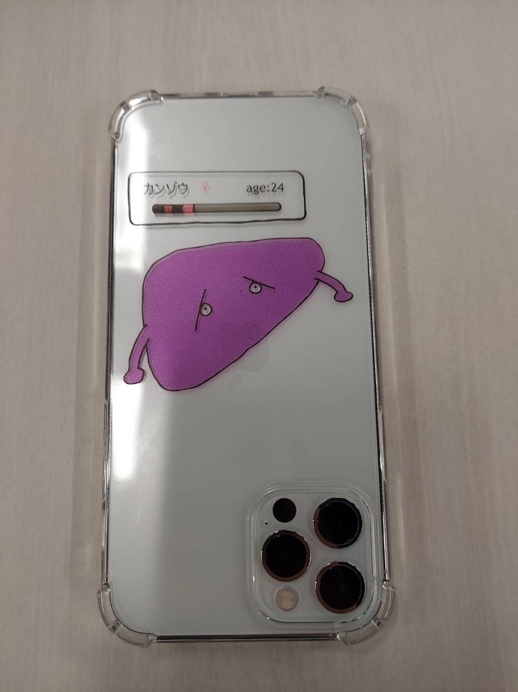
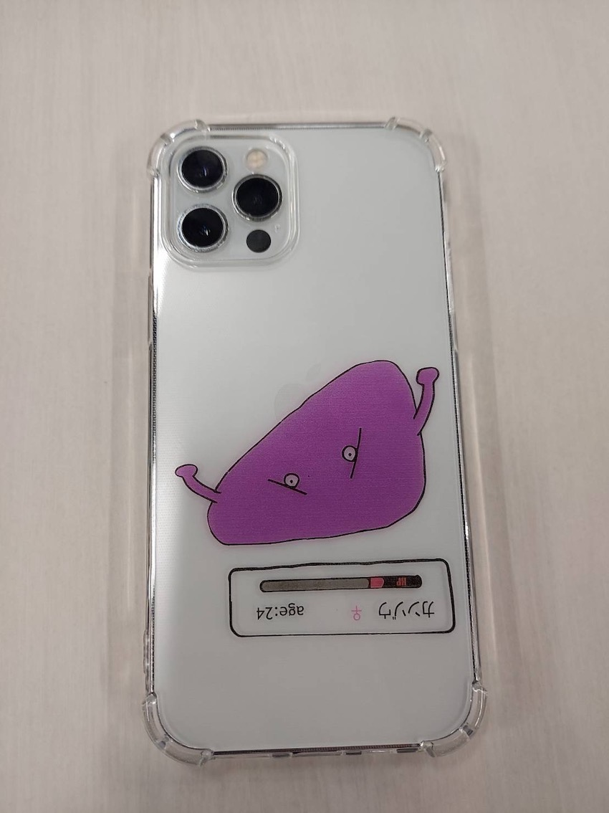

第4回課題
前回の課題のページ
完成した作品
 
説明
前回のプロトタイピングを元に、班員で話し合った結果、飲み会で無理に飲まされないためのアイテムとして
誰でも持ち歩いている、他の人にアピールしやすいといった理由からスマホケースを作成することになった。
この作品は弱っている肝臓をデザインした。
こだわったポイント
肝臓は症状が出にくい事から「沈黙の臓器」と呼ばれているため、口を描かなかったところ
キャッチーでわかりやすくするために、某ゲームの体力ゲージのようなものを付け加えたところ
反対側の人にも見えやすいように絵を反対向きにしてプリントしたところ（本当はただ失敗しただけです）
使用機材
UVプリンター
同じ班のメンバーのページ